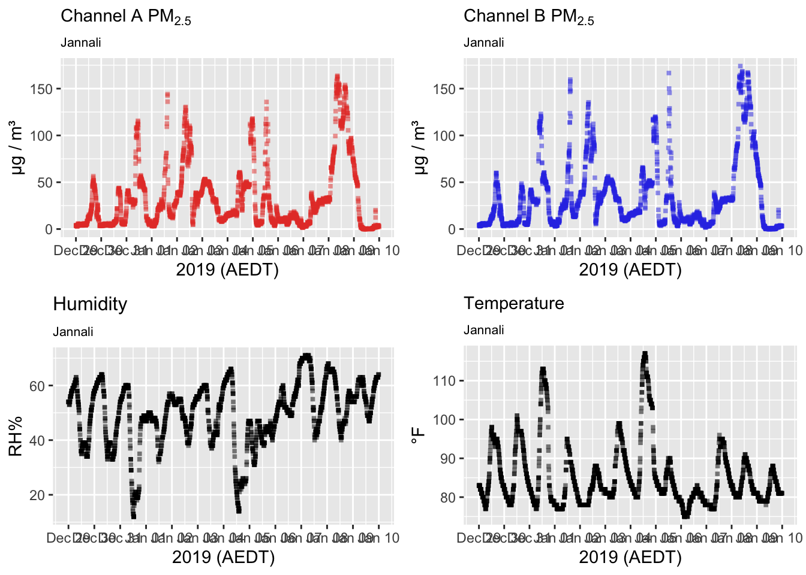
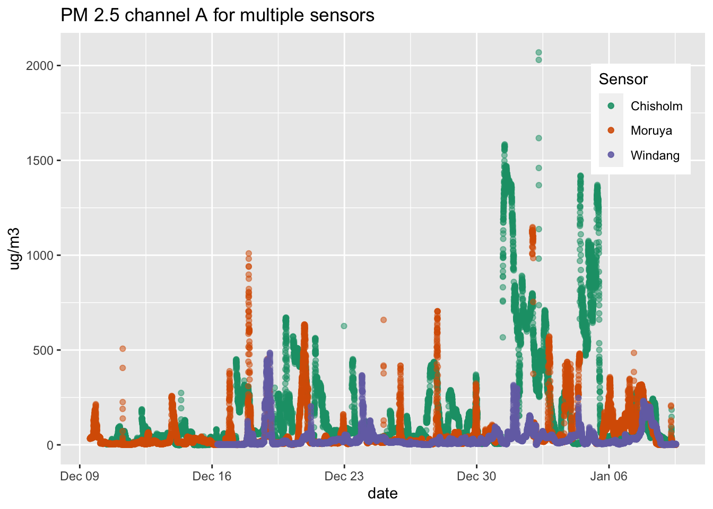
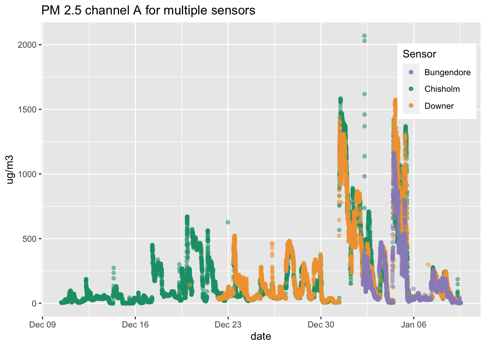
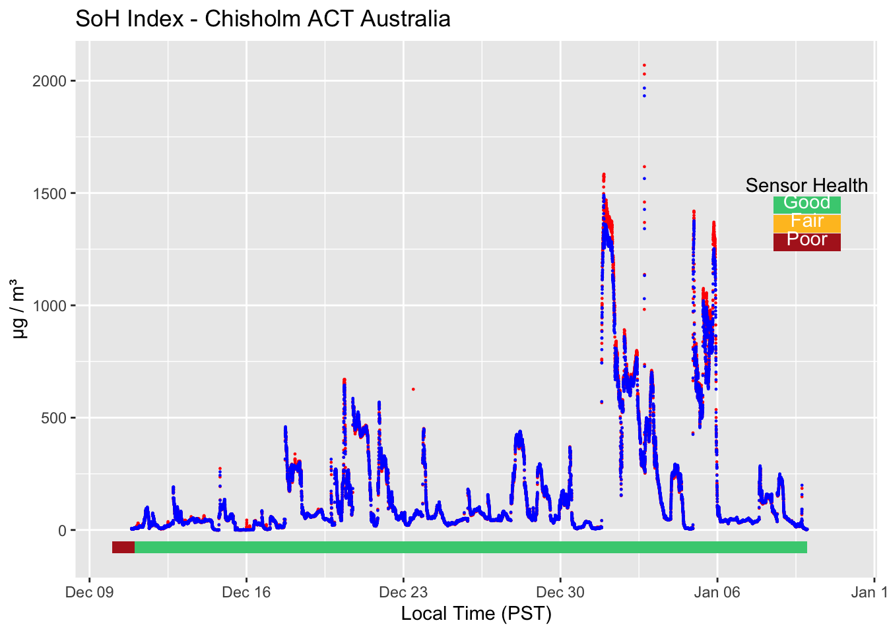
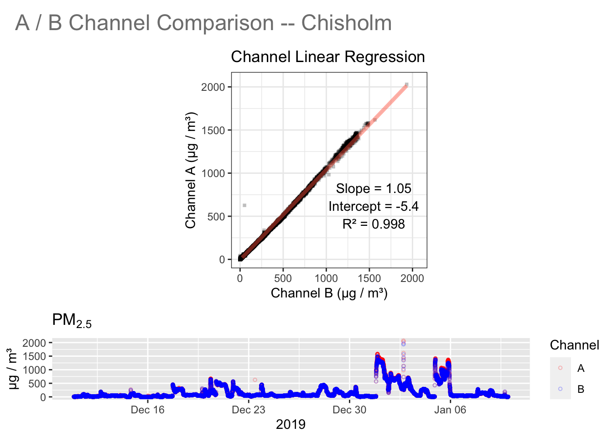
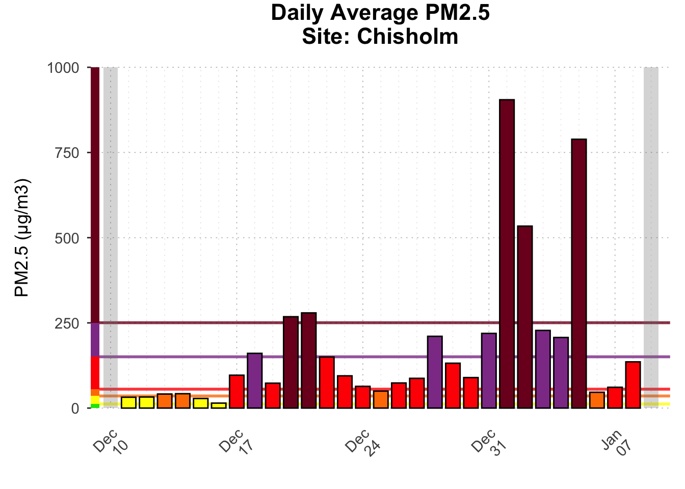
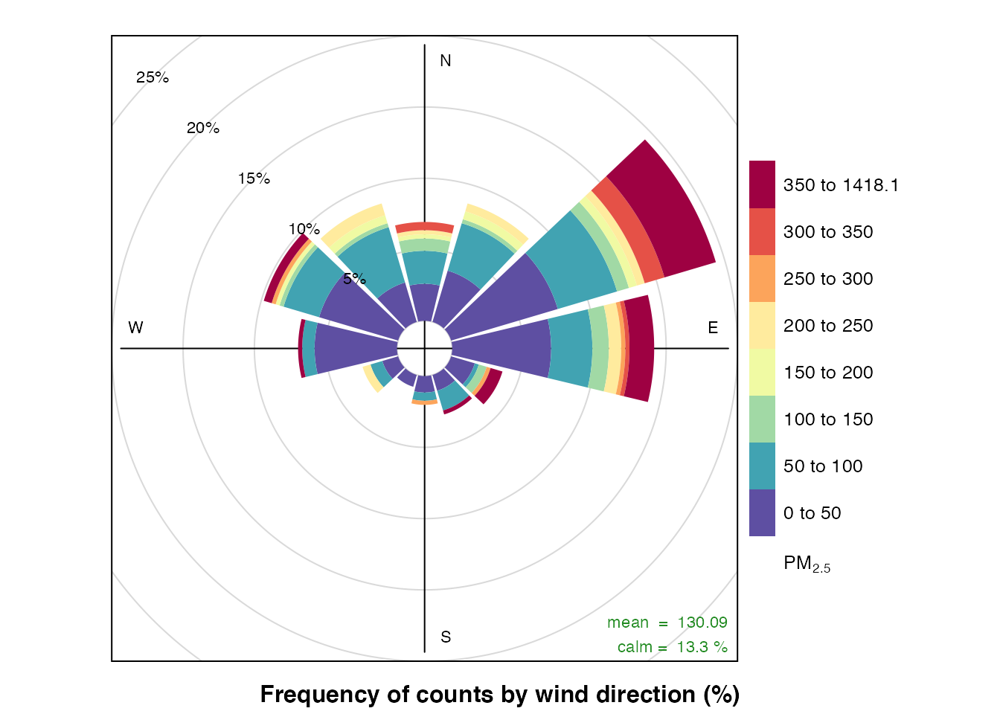

vignettes/articles/Australia_on_fire.Rmd
Australia_on_fire.RmdThe goal of this report is to demonstrate the use of the AirSensor package to explore the smoke impacts of the December 2019 - January 2020 fires and smoke in Australia. This document demonstrates “reproducible research” in that no pre-generated files are needed. Raw data from PurpleAir will be downloaded and processed when this script is first run.
We begin by loading the necessary packages:
library(dplyr) # data manipulation
library(ggplot2) # plotting
library(PWFSLSmoke) # USFS monitor data access and plotting
library(AirSensor) # PurpleAir sensor data access and plotting
library(AirMonitorPlots) # Advanced plots for monitorsIn this document we will use the term “sensor” to refer to consumer-grade, PurpleAir air quality sensors sampling at a high time resolution. The term “monitor” will refer to professional-grade, typically government managed monitors with hourly data.
The AirSensor package has three data models:
The AirSensor package needs to know where processed data will live. For this report, we will specify a local archiveBaseDir where downloaded and processed data will live. The following code specifies a local directory archive, checks for its existence and creates it if needed.
We will use the pas_createNew() function to create a pas object containing all the spatial metadata associated with purple air monitors in Australia.
The following code checks to make sure the pas_au file exists in your archiveBaseDir directory and, if missing, recreates it.
A pas object is a dataframe that contains metadata and PM 2.5 averages for many purple air sensors in a designated region. Each pas object can be filtered and edited to retain whichever collection of sensors the analyist desires based on location, state, name, etc.
It is important to note that the data averages in the pas object – the numeric values for PM2.5 or temperature or humidity – are current at the time that the pas is created. pas objects can be used to quickly explore the spatial distribution of PurpleAir sensors and display some then-current values but should not be used for detailed analysis.
We can view the locations of each sensor and the AQI (Air Quality Index) maxima (when the pas was created) using the pas_leaflet() function.
On January 15, 2020, the leaflet plot showed unhealthy air quality for Sydney. Let’s look at data from a sensor in the Sydney area for the time period covering the Australian wildfires. One of those sensors is labeled “Jannali”
The following chunk will check to see if the pat object for the sensor named “Jannali” has already been created the local directory and will recreate it if needed.
label <- c("Jannali" )
filePath_jannali <- file.path(archiveBaseDir, "pat_jannali.rda")
if ( file.exists(filePath_jannali) ) {
pat_jannali <- get(load(filePath_jannali))
} else {
pat_jannali <- pat_createNew(
pas = pas,
label = label,
startdate = 20191229,
enddate = 20200110
)
save(pat_jannali, file = filePath_jannali)
}A pat object is a list of two dataframes, one called meta containing spatial metadata associated with the sensor and another called data containing that sensor’s time series data. Each pat object contains time series data for a temperature channel, a humidity channel, A and B PM 2.5 channel’s, and several other fields.
The following chunk demonstrates use of the pat_multiplot() function to have a quick look at the data contained in a pat object. The plot shows both A and B channels as well as temperature and humidity. The plotting function is flexible and has options for choosing which channels to display, on the same or individual axes. (Type ?pat_multiplot to learn more.)
In this case we see that the data look good. Channels A and B are both showing lots of PM 2.5 data for “Jannali” over the period of interest

For the purposes of this exploratory example, we are focusing on Australia but maybe we want to filter even more and just look at the sensors within a certain radius of the one we chose in Sydney.
lon <- pat_jannali$meta$longitude
lat <- pat_jannali$meta$latitude
pas_sydney <-
pas_au %>%
pas_filterNear(
longitude = lon,
latitude = lat,
radius = "50 km"
)
pas_leaflet(pas_sydney)On Januar 15, 2020, the air quality in Sydney appeared to be unhealthy. [Using a pas object created don that day] we can look for the sensors that are reporting the highest pm25 levels.
The next chunk of code filters the pas for the sensors that have a reported pm25 value higher than 150.
It is important to note here that the sensors listed in the pas after filtering will depend on the date that the original pas was generated. Since dat avalues are only valid for the time a pas is created, the pas that you use may show different for the same sensors generated with pas that we are using here. This document was created using a pas with data from January 15, 2020.
Now that the pas has been filtered based on the worst air quality, we can create pat objets for sensors listed in the pas. You could download all the sensors in the newly filtered pas but, for the purposes of reproducibility, we will continue to use the pas_au object as the reference pas to ensure that the sensors referenced are present. Again, this is due to the ephemeral nature of the data in a pas object which is only valid when it is initially created..
Since the fires in Australia started, new PurpleAir sensors have been popping up left and right. Let’s start by grabbing data from sensors with the longest history. The following chunk will check to see if the pat objects are already in the local data directory, if not, they will be downloaded.
startdate <- 10191210
enddate <- 20200110
filePath_chisholm <- file.path(archiveBaseDir, "pat_chisholm.rda")
if ( file.exists(filePath_chisholm) ) {
pat_chisholm <- get(load(filePath_chisholm))
} else {
pat_chisholm <- pat_createNew(
label = "Chisholm ACT Australia",
pas = pas_au,
startdate = startdate,
enddate = enddate
)
}
filePath_moruya <- file.path(archiveBaseDir, "pat_moruya.rda")
if ( file.exists(filePath_moruya) ) {
pat_moruya <- get(load(filePath_moruya))
} else {
pat_moruya <- pat_createNew(
label = "MORUYA HEADS",
pas = pas_au,
startdate = startdate,
enddate = enddate
)
}
filePath_windang <- file.path(archiveBaseDir, "pat_windang.rda")
if ( file.exists(filePath_windang) ) {
pat_windang <- get(load(filePath_windang))
} else {
pat_windang <- pat_createNew(
label = "Windang, Ocean Street",
pas = pas_au,
startdate = startdate,
enddate = enddate
)
} In order to look for patterns, we can look at the PM2.5 data recorded on channel A from all the sensors. This chunk uses ggplot2 to view all the data on the same axis.
colors <- c(
"Chisholm" = "#1b9e77",
"Moruya" = "#d95f02",
"Windang" = "#7570b3"
)
gg <- ggplot(data = pat_chisholm$data) +
geom_point(aes(x = pat_chisholm$data$datetime,
y = pat_chisholm$data$pm25_A,
color = "Chisholm"), alpha = 0.5) +
geom_point(data = pat_moruya$data,
aes(x = pat_moruya$data$datetime,
y = pat_moruya$data$pm25_A,
color = "Moruya"), alpha = 0.5) +
geom_point(data = pat_windang$data,
aes(x = pat_windang$data$datetime,
y = pat_windang$data$pm25_A,
color = "Windang"), alpha = 0.5) +
labs(title = "PM 2.5 channel A for multiple sensors" ) +
xlab("date") +
ylab("ug/m3") +
scale_colour_manual(name="Sensor",values=colors) +
theme(legend.position= c(0.9, 0.8))
print(gg)
Values above 1000 μg/m³ may be suspect as they are above the maximum range of the PLANTOWER particle detectors used in Purple Air sensors. (See PLANTOWER PMS5003 specs)
Let’s check a few other sensors that are closer in proximity to Chisholm to see if they are also reporting such high values.
filePath_bungendore <- file.path(archiveBaseDir, "pat_bungendore.rda")
if ( file.exists(filePath_bungendore) ) {
pat_bungendore <- get(load(filePath_bungendore))
} else {
pat_bungendore <- pat_createNew(
label = "Bungendore, NSW Australia",
pas = pas_au,
startdate = 20191229,
enddate = 20200110
)
save(pat_bungendore, file = filePath_bungendore)
}
filePath_downer <- file.path(archiveBaseDir, "pat_downer.rda")
if ( file.exists(filePath_downer) ) {
pat_downer <- get(load(filePath_downer))
} else {
pat_downer <- pat_createNew(
label = "Downer",
pas = pas_au,
startdate = 20191220,
enddate = 20200110
)
save(pat_downer, file = filePath_downer)
}These recently installed sensors have a shorter data history but are located close to our Sydney sensors and we would expect the PM2.5 signals to be similar.
The next chunk uses ggplot2 to plot A channel data from the “Chisholm ACT Australia” sensor in the same green color as
above in addition to channel A data from the two nearest sensors.
colors <- c("Chisholm" = "#1b9e77",
"Downer" = "#f1a340",
"Bungendore" = "#998ec3")
gg <- ggplot(data = pat_chisholm$data) +
geom_point(aes(x = pat_chisholm$data$datetime,
y = pat_chisholm$data$pm25_A,
color = "Chisholm"), alpha = 0.5) +
geom_point(data = pat_downer$data,
aes(x = pat_downer$data$datetime,
y = pat_downer$data$pm25_A,
color = "Downer"), alpha = 0.5) +
geom_point(data = pat_bungendore$data,
aes(x = pat_bungendore$data$datetime,
y = pat_bungendore$data$pm25_A,
color = "Bungendore"), alpha = 0.5) +
labs(title = "PM 2.5 channel A for multiple sensors" ) +
xlab("date") +
ylab("ug/m3") +
scale_colour_manual(name = "Sensor", values = colors) +
theme(legend.position = c(0.9, 0.8))
print(gg)
All three sensors are reporting very high values on the same days between December 30, 2019 and January 6, 2020. We can use AirSensor package “State-of-Health” functions to evaluate whether these recently installed sensors are performing properly.
After looking at sensor data from numerous sensors over long periods of time, we have noticed that the pat data quality can degrade over time. A quick way to quantify data quality is to simply calculate the r2 value between channels A the daily data quality is categorized as good, fair, or poor. Typically, new sensors have not had time for outside factors to degrade data quality, but for a quick sanity check, we can use the pat_dailySoHIndexPlot() function to plot the daily State-of-Health index. This function plots both channels A and B with a daily State-of-Health index along the bottom.
The State-of-Health index is a multi-metric index and with several components including. The dailyPctReporting component is most likely responsible for the brief segment of “Poor” during the first partial day in the time series.

The sensor seems to be in good health so. It is uncler what to make of such high PM2.5 values and whether they are out-of-spec or not. In any case, the smoke in the Sydney area was clearly very bad over the time period of interest.
The primary component used in the State-of-Health index is the level of agreement between the A and B channel measurements. The pat_internalFit() function makes it easy to compare these values and calculate the R2 .

With an R2 of 0.998, this sensor seems to be performing quite well indeed.
Another way to look at the PurpleAir sensor data is to convert the pat into an airsensor object. The following chunk aggregates data from a pat object into an airsensor object with an hourly time axis. This new airsensor object is equivalent to a ws_monitor object used in the PWFSLSmoke package.
airsensor_chisholm <- pat_createAirSensor(pat_chisholm)
#airsensor_chisholm <- pat_createAirSensor(
# pat = pat_chisholm,
# period = "1 hour",
# parameter = "pm25",
# channel = "a",
# qc_algorithm = "hourly_AB_01",
# min_count = 20,
# aggregation_FUN = pat_aggregate
#)Now that we have converted the relative raw pas into an airsensor object, we can any of the “monitor” plotting functions found in the PWFSLSmoke or AirMonitorPlots packages

Here, the bar associated with each day is colored by Air Quality Index (AQI). Over this time period there were only 10 days where the daily average AQI was below “Unhealthy”. Yikes!
Unfortunately, the current QC algorithm in the package invalidates values over 1000 resulting in missing daily averages on the days with the highest measurements. (This threshold is being reevaluated.)
To get a sense of what direction smoke is coming from, we use thesensor_PolluationRose() function. As the name implies, this function takes an airsensor objecct as an argument. It then obtains hourly wind direction and speed data from the nearest meterological site and plots a traditional wind rose plot for wind direction and PM2.5.
In this case, it looks like the smoke is coming mostly from the E/NE which is validated by this wind rose plot from the Australian Bureau of Meteorology here: http://www.bom.gov.au/cgi-bin/climate/cgi_bin_scripts/windrose_selector.cgi?period=Dec&type=9&location=72150

The sensor_pollutionRose() function uses the metdata package to obtain wind data. We can use this package ourselves to get location information for the narest meteorological site to Chisholm so that we can map the location relative to our PurpleAir sensors.
The chunk below finds the meteorological site closest to Chisholm, and plots it on the map in blue along with oter sensors near Canberra.
# Target location
lon <- pat_chisholm$meta$longitude
lat <- pat_chisholm$meta$latitude
# Meteorological sites
closestSite <- worldmet::getMeta(lon = lon,
lat = lat,
n = 1,
plot = FALSE)[1,]
# Canberra sensors
pas_canberra <-
pas_au%>%
pas_filterNear(
latitude = pat_chisholm$meta$latitude,
longitude = pat_chisholm$meta$longitude,
radius = "40 km"
)
# Leaflet map
map <- pas_leaflet(pas_canberra)
map <-
map %>%
leaflet::addCircleMarkers(lng = closestSite$longitude,
lat = closestSite$latitude)
mapHopefully, this tour of functionality gives you a sense of the capabilities of the AirSensor package and provides a template for your own investigations of air quality data.
Happy Exploring!
Mazama Science